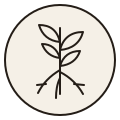
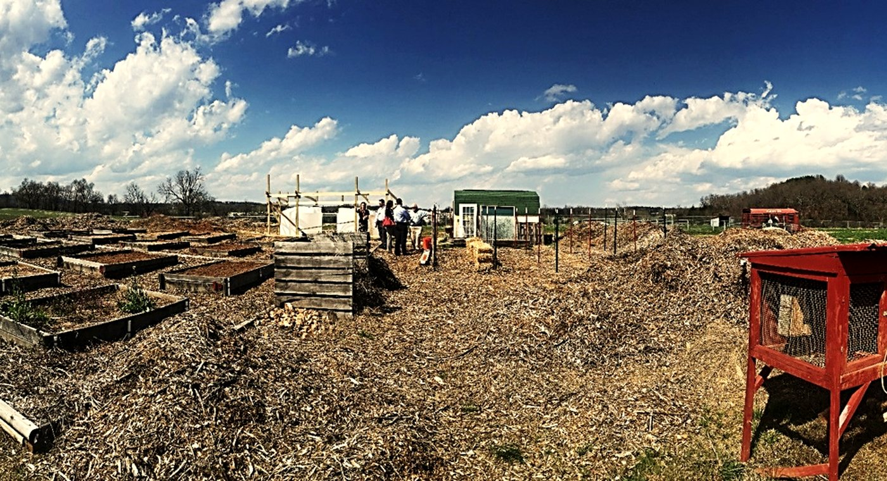
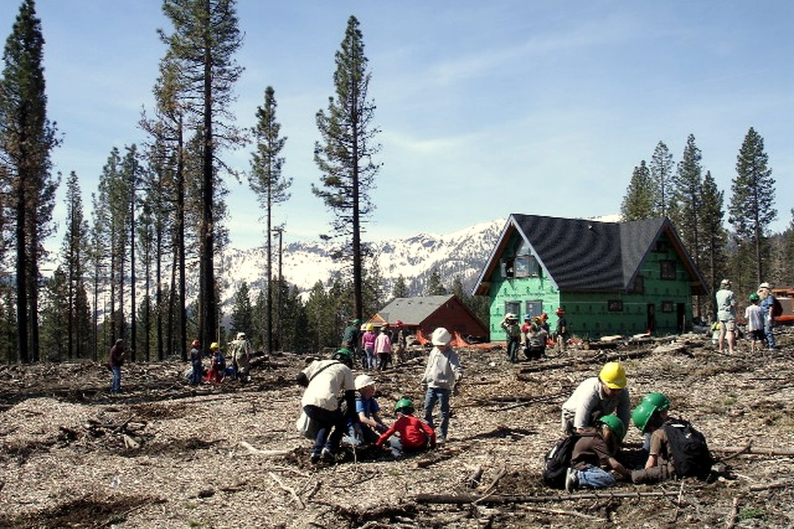

Mentoring Circles
Weekly small groups provide a safe place for honest conversation, prayer, support, and dependable relationships with caring adult mentors.

Roots and RiversGrow · Lead · Belong
Our programs combine mentorship, faith, cultural identity, outdoor learning, and service so young people can build confidence and meaningful relationships.
What We Offer
Weekly small groups provide a safe place for honest conversation, prayer, support, and dependable relationships with caring adult mentors.
Hands-on workshops help youth practice public speaking, teamwork, event planning, decision-making, and community problem solving.
Seasonal outdoor gatherings connect youth with local landscapes through hiking, cleanup projects, traditional knowledge, and stewardship.
Youth explore photography, painting, music, storytelling, and design as ways to express identity and share community stories.
Activities encourage healthy routines, emotional awareness, spiritual growth, movement, rest, and culturally grounded support.
Young people plan and complete service projects that address practical needs while learning responsibility and collaboration.
Learning by Doing
Youth practice teamwork through land care, creative projects, mentoring circles, and community service. The goal is not only to learn new skills, but to discover that their voice and presence matter.



A Place to Belong
Programs are designed for middle and high school youth. No previous experience is needed, and families are welcome to contact us with questions.
Ask About a Program